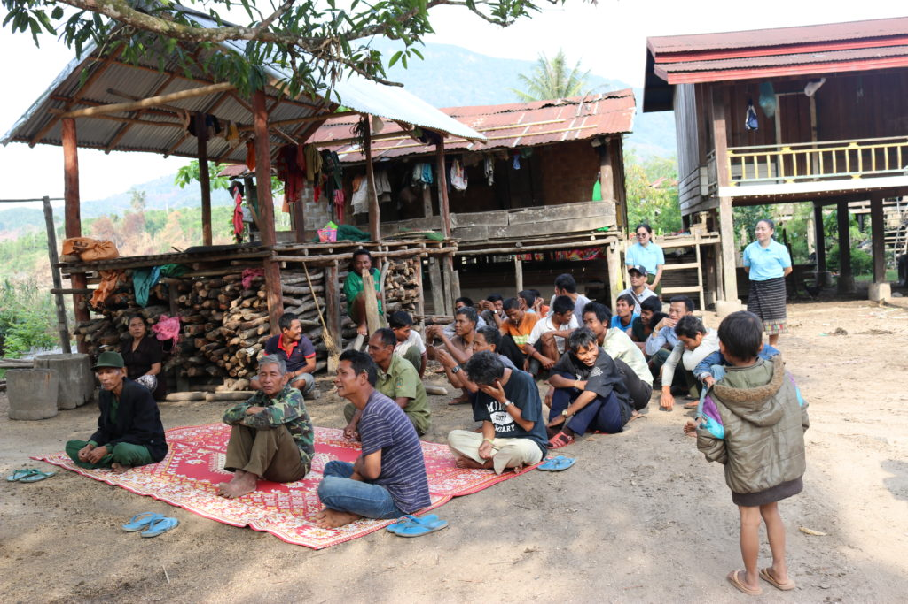
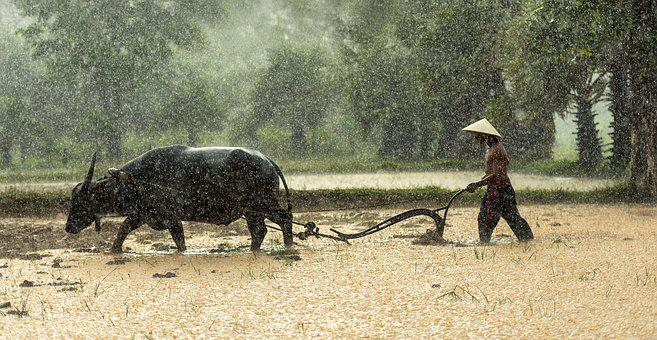

In Laos gilt man offiziell als arm, wenn man täglich weniger als 1,9$ verdient. Demnach leben 10% aller Menschen in Laos unter dieser Grenze.
Auch das Bruttoinlandsprodukt (BIP) des Landes ist für seine 7 Millionen Einwohner gering und beträgt nur 19,3 Milliarden $. Eine Person in Laos verdient demnach ca. 7,60$ am Tag.
Nicht nur der BIP ist gering, sondern auch der Human Development Index (HDI). Mit 0,613 im Jahr 2019 stand Laos auf Platz 137 weltweit.
Doch Hoffnung gibt es. Auch wenn Laos derzeitig Arm ist, gibt es immer noch Möglichkeiten sich aus der Armut zu befreien. Z.B. durch große Bauprojekte, wie Wasserwerke, oder durch Arbeitsplätze, welche dank das Seidenstraßenprojekt von China entstehen. Zusätzlich sind sowohl der HDI, als auch der BIP in den letzten Jahrzehnten drastisch gestiegen.